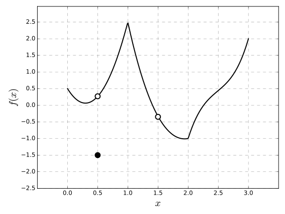

2.5 - Continuity
A function $f$ is continuous at a point $x=a$ if
$$
\lim_{x \to a} f(x) = f(a)
$$
This definition necessitates additionally that:
- $a$ is in the domain of $f$
- $\lim_{x \to a} f(x)$ exists
The previous two necessary conditions are easy checks to see if a function is not continuous at a point.
Where is $f(x)$ discontinuous?

Determine if the following are continuous:
- $\displaystyle f(x) = \frac{x^2-x-2}{x-2}$
- $\displaystyle f(x) = \begin{cases} \frac{x^2-x-2}{x-2} & x \neq 2 \\ 1 & x=1 \end{cases}$
- $f(x) = \frac{1}{x}$
- $f(x) = \lfloor x \rfloor$
A function is right-continuous at $x=a$ if $\lim_{x \to a^+} f(x) = f(a)$ and left-continuous at $x=a$ if $\lim_{x \to a^-} f(x) = f(a)$
The floor function, $f(x) = \lfloor x \rfloor$, is right continuous but not left continuous.
A function, $f$, is said to be continuous on an interval if it is continuous at every point on the interval.
Show that $f(x) = 1-\sqrt{1-x^2}$ is continuous on $[-1,1]$.
If $f$ and $g$ are both continuous at a point, $x=a$, then any limit law manipulation of $f$ and $g$ (from section 2.3) is also continuous, i.e., $f+g$, etc...
- Polynomials are continuous on $\mathbb{R}=(-\infty, \infty)$
- Rational functions are continuous on their domain (i.e., $\mathbb{R}$ minus points of which make the denominator zero)
Determine where $\displaystyle f(x) = \frac{x^3 + 2x^2 -1}{5-3x}
If $f$ is continuous and $f^{-1} exists, then $f^{-1}$ is also continuous.
$\tan(x)$ is continuous on $(-\pi/2, \pi/2)$, and $\tan^{-1}(x)$ is continuous on $\mathbb{R}$.
The following functions are continuous on their domains:
- Polynomials
- Rational functions
- Root functions
- Trig and inverse trig functions
- Exponential and logarithmic functions
Where is $\displaystyle f(x) = \frac{\ln(x) + \tan^{-1}(x)}{x^2-1}$ continuous? (ans = $(0,1) \cup (1,\infty)$)
If $\lim_{x \to a} g(x) = L$ exists and $f$ is continuous at $x=L$, then
$$
\lim_{x \to a} f(g(x)) = f\left( \lim_{x \to a} g(x) \right)
$$
Find $\lim_{x \to 0} \ln\left( 1 - \sin(x^2) \right)$.
If $g$ is continuous at $x=a$ and $f$ is continuous at $g(a)$, then $$(f \circ g)(x) := f(g(x))$$ is continuous at $x=a$.
Where is $\sin(1/x)$ continuous?
Where is $f(x) = \ln\left( 1 + \cos(x) \right)$ continuous?
(The intermediate value theorem) Suppose $f$ is continuous on $[a,b]$. Pick $y$ between $f(a)$ and $f(b)$. Then there exists $x \in (a,b)$ such that $f(x)=y$.
Suppose $f(x)=4x^3 - 6x^2 + 3x -2$. Show that $f$ has a root between $x=1$ and $x=2$. Solution: $f(1) = 4-6+3-2 = -1, f(2) = 4*8 - 6*4 + 3*2 - 2 = 32-24+6-2 = 12$